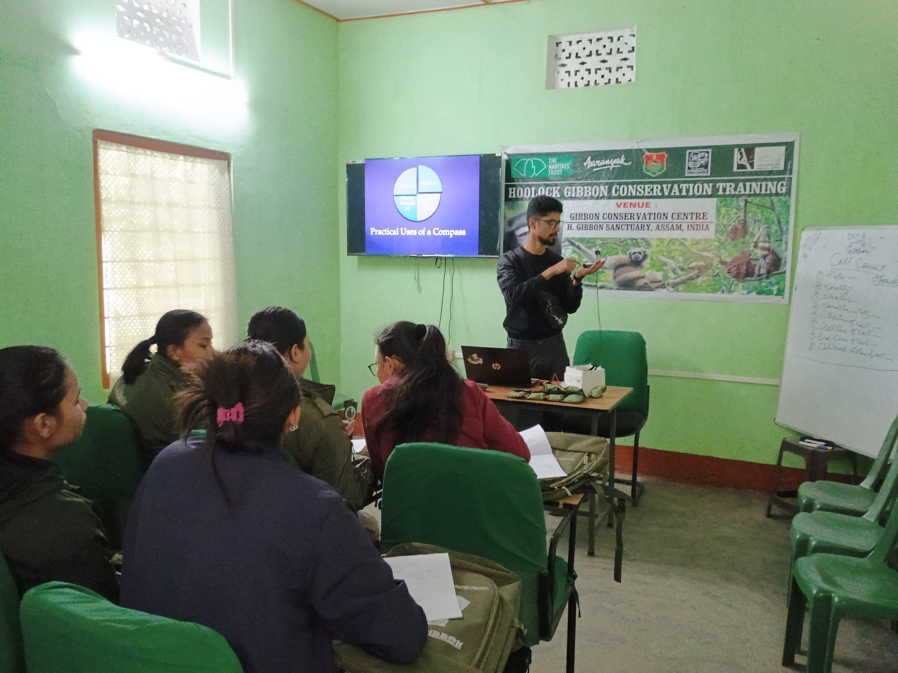
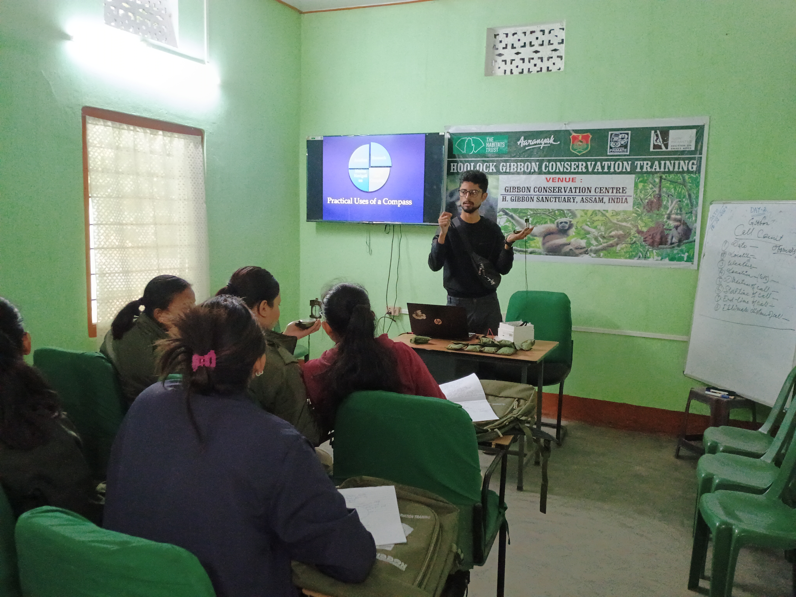

Wildlife Observation Event
During my tenure as a researcher with Aaranyak’s Primate Research & Conservation Division (PRCD), I helped develop the idea of Primate Watch. The programme included a field observation at Hoollongapar Gibbon Sanctuary on 16 March 2025, organised as part of International Macaque Day, and another at Basistha Temple, where we observed macaque–human interactions. During the two-hour Hoollongapar observation, participants observed Hoolock Gibbon, Pig-tailed Macaque and Rhesus Macaque. Read the event coverage in Syllad and Northeast India 24.

Wildlife conservation begins with awareness.
During my tenure as a researcher with Aaranyak’s Primate Research & Conservation Division (PRCD), I trained frontline forest staff in field data collection and provided hands-on training in the use of GPS and a compass to collect wildlife data.

Helping young people discover conservation.
I work with young people in schools and colleges to build awareness of wildlife conservation and the importance of field-based understanding. Through talks, images and open conversation, I encourage students to look closely at the natural world and see how they can help protect it.


Workshops & Training
- Hoolock Gibbon Conservation & Research Workshops
- Conservation Action Plan Workshops
- Wildlife Population Survey & Monitoring Training
- GIS & GPS for Wildlife Research
- Biodiversity & Conservation Training Programmes
- Frontline Forest Staff Capacity-Building Programmes
- Primate Conservation & Awareness Workshops